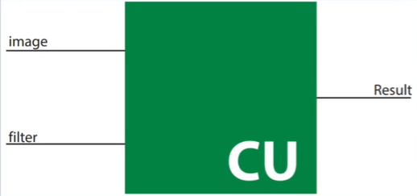

1 方案设计
1.1 加速指标
对于神经网络加速器来说，需要考虑的主要指标有： + 并行度：与计算速度和资源占用成正比； + 计算速度：与并行度和资源占用成正比； + 资源占用：与并行度和计算速度成正比；
目标：最大化计算速度，最小化资源占用。
1.2 加速模拟
加速器验证思路：
1. 使用Python/C++编写模块相同功能函数；
2. 为硬件模块与软件函数搭建对应testbench，记录模拟结果；
3. 对比两者输出数据是否一致（随机抽样验证）；
4. 若发现错误，修改模块，并重新验证。
1.3 加速技巧
1.4 数值量化
半精度浮点数float16：常用于实现加速器中的浮点数运算。其结构：
+ 符号S：1 bit
+ 指数E：5 bit
+ 尾数M：10 bit
|S| E | M |
16| |14 10|9 0|
FP16 = (-1)^S * 1.M * 2^(E - 15)
Range: [5.96*10^-8, 6.55*10^4]
2 模块加速
2.1 Conv模块加速
对卷积层进行模块分解：
+ 顶层：ConvLayer卷积层模块
+ 激活函数：Tanh激活函数、 Softmax激活函数
+ 池化层：AvgPool平均池化层
+ 算子：
+ 浮点：mulf16半精度浮点乘、addf16半精度浮点加
2.1.1 Filter Layer
一个卷积层有多个卷积核（Filter），image输入到不同的核得到不同的特征（Feature），自顶向下先观察Multi Filter Layer，其输入图像和六个卷积核，输出卷积结果。
网络ConvLayerMulti层输入矩阵规模：image 32*32, filterSet 5*5
模块ConvLayerMulti层输入：
image: 1 * 32 * 32 * 16 = 16384
filters: 6 * 5 * 5 * 16 = 2400
outputConv: 1 * 28 * 28 * 16 = 12544
^ channel ^ scale ^ bitwidth
对于单个卷积核（Filter），再观察Single Filter Layer，其输入图像和单个卷积核，输出特征图（Feature Map）。

模块ConvLayerSingle层输入：
image: 1 * 32 * 32 * 16 = 16384
filters: 1 * 5 * 5 * 16 = 400
outputConv: 1 * 28 * 28 * 16 = 12544
^ channel ^ scale ^ bitwidth
2.1.2 Convolution Unit
一个卷积核（Filter）与一个输入图像（Image）进行卷积运算，得到特征图（Feature Map），这个过程通过ConvUnit模块实现。


CU模块循环使用PE模块实现一个窗口的卷积操作，并输出一个半精度浮点型（FP16）计算结果。PE牺牲了速度换面积。

2.1.3 Processing Element
卷积进行的具体操作是点乘，这里本质上是浮点算子：mulf16乘、addf16加，这里通过PE模块实现。

元素处理（PE）模块：执行具体卷积操作，即权重与数据相乘后累加。添加result_reg，将电路从组合逻辑转化为时序逻辑，保证数据同步。

元素处理（PE）模块代码演示：
module PE(
clk, rst,
fA, fB, res
);
parameter DATA_WIDTH = 16; // 数据位宽
input clk, rst;
input [DATA_WIDTH-1:0] fA, fB;
output reg [DATA_WIDTH-1:0] res;
wire [DATA_WIDTH-1:0] mul_res;
wire [DATA_WIDTH-1:0] add_res;
// 1. 计算乘法结果
mulf16 FMUL(.fA(fA), .fB(fB), .res(mul_res));
// 2. 计算累加结果
addf16 FADD(.fA(fA), .fB(fB), .res(add_res));
always @(posedge clk or posedge rst) begin
if(rst == 1'b1) begin
res <= 0;
end else begin
res <= add_res;
end
end
endmodule
3 项目概览
3.1 项目目录
参考如下CNN加速器目录：
.
├── vivado_project # 项目完整网络的vivado工程
├── conv_code # 不同并行度的卷积模块代码
├── final_code # 各模块以及网络顶层代码
│ ├── Part1. Convolution
│ ├── Part2. TanH Activation
│ ├── Part3. Softmax Activation
│ ├── Part4. Average Pooling
│ ├── Part5. Intergration
│ └── ...
├── test_scripts # 各个模块验证脚本
│ ├── Test1. ANN Test
│ ├── Test2. TanH Test
│ ├── Test3. Text Files Test
│ ├── Average Pooling Python Code
│ ├── Convolution Python Code
│ ├── Softmax Python Code
│ └── ...
├── results # 仿真截图，综合报告，验证数据表格
├── weights # 卷积与全连接层权重和偏置数据
├── hw_design.pdf # 项目硬件设计文档
└── README.md # 项目介绍